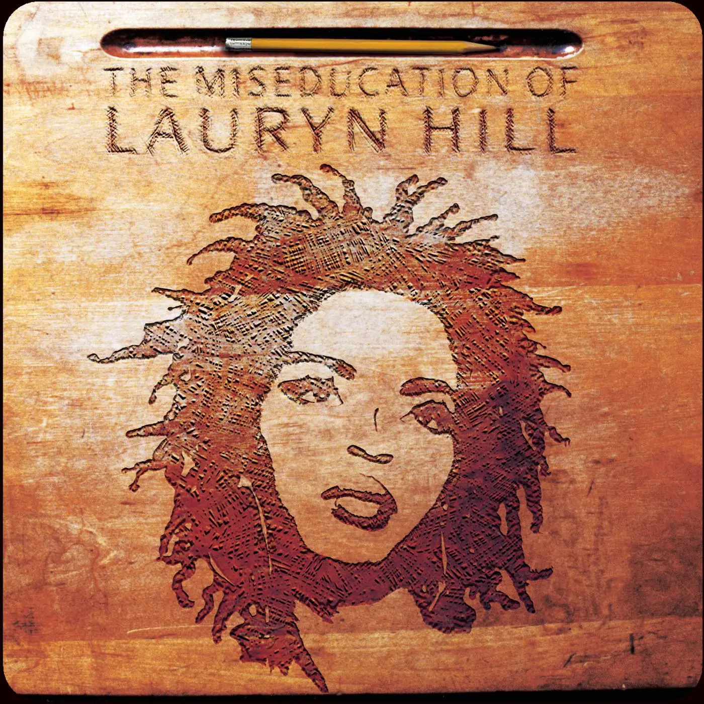

Album#1
The Miseducation of Lauryn Hill
{kind=link}

专辑信息
- 专辑名称：The Miseducation of Lauryn Hill
- 歌手：Lauryn Hill
- 年份：1998-08-25
- 风格：Neo-Soul
- 时长：77:39

这张专辑最初是在看 听完这些专辑还不爱 Neo-Soul 的，我真没见过！ 的时候知道的，视频中介绍了很多张 Neo-Soul 的专辑，这张专辑应该是我目前听得最多的一张。
专辑本身也很有实力，在滚石(Rolling Stone)杂志 史上最伟大的 500 张专辑 中排行第 10。
对于 Neo-Soul，我的理解是1：
Neo-Soul 的主要元素是 Hip-Hop，Jazz 和 Soul。
Hip-Hop 很好理解，就是说唱，歌词往往很多押韵，一听就知道是 Hip-Hop。
Jazz 演奏上偏即兴，往往会有一些管乐，如长号、小号、萨克斯，也会有钢琴、长笛等的乐器。
Soul 是那种让你有「灵魂感」的东西，往往会觉得歌手的歌唱有强烈的感情，很能感染你，有很强的渲染力。
对我而言就是非常抓耳的旋律，以及歌手富有情感的唱法。
同时灵魂乐也往往和福音音乐有关，会出现一些像是合唱一般的和声。
这张专辑中的几首歌，如 Lost Ones，Ex-Factor，To Zion，Doo Wop (That Thing)，它们的副歌都很抓耳，Lauryn Hill 的歌声也很有感染力，还伴有一些和声，我想这大概就是 Soul 的特点了。
而像是 Final Hour 这首，则是很明显的 Hip-Hop，里面你还能听到一些管乐，长笛等的演奏，或许也能算得上是 Jazz。
专辑中，除了演唱，还穿插了一些像是课堂提问的内容，是一些关于爱的问答，也蛮有趣的。
专辑里我个人最喜欢的一首是 Doo Wop (That Thing)，主要是喜欢它的副歌，非常抓耳，听完之后，脑海里总是不经意的响起它的旋律。
这是一张 1998 年的专辑，但现在听来也不会觉得有年代感，好的专辑就是如此，历久弥新。
PS:
刚开始还是很喜欢这张专辑的，但是为了分享，在有些听厌的情况下反复听，短时间内不太想再听了。
一直听 Soul，一直感受强烈的情感，时间长了也会觉得有些激烈，会想听点稍微安静点的。
- genius.com 是个不错的网站，整理的歌曲信息还挺完善的，尤其是英文专辑。
脚注:
什麼是Ｒ＆Ｂ？Soul & Neo Soul? 让我对 Soul 有更多的理解。